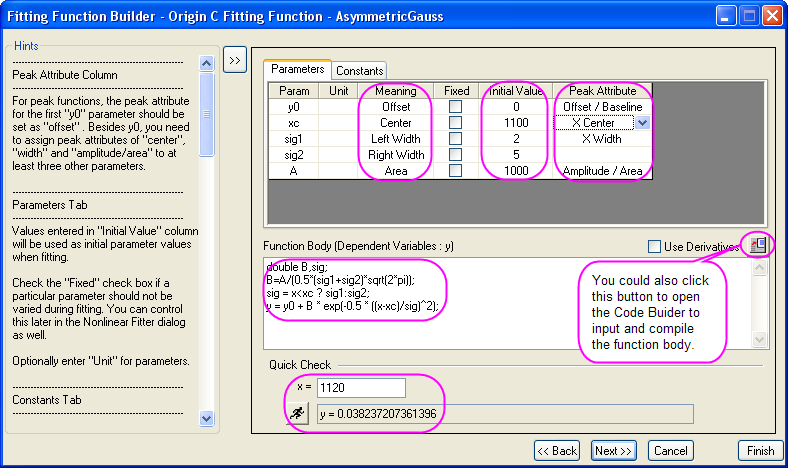
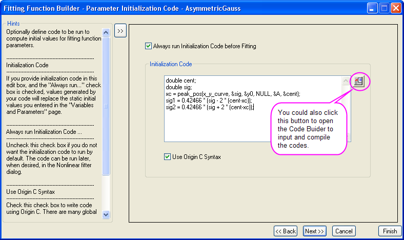
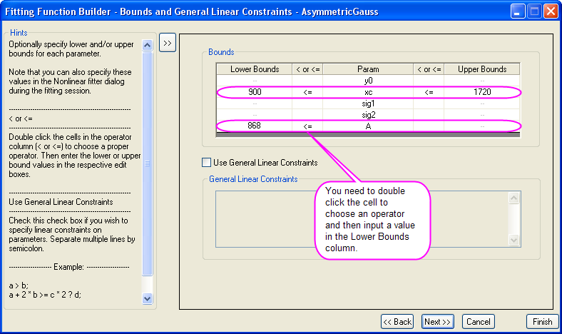
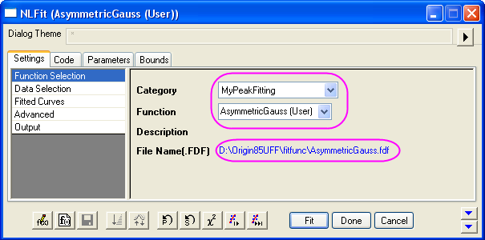
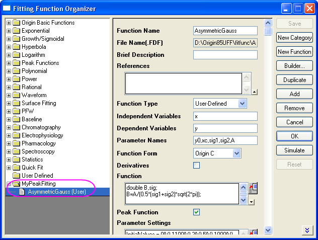
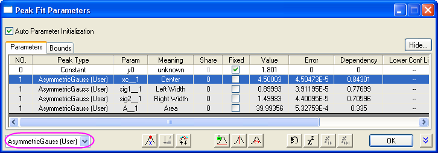

Ein einfaches Beispiel zum Zeigen einer neuen expliziten Anpassungsfunktion mit dem Dialog Fitfunktionen erstellen
Zusammenfassung
Dieses Tutorial erläutert, wie Sie eine Anpassungsfunktion mit dem Dialog Fitfunktionen erstellen erstellen.
Origin-Version mind. erforderlich: Origin 8.5 SR0
Was Sie lernen werden
- Wie Sie eine Impulsanpassungsfunktion definieren
- Wie Sie einen Funktionskörper schreiben
- Wie Sie Initialisierungscodes schreiben
- Wie Sie Grenzen für Parameter festlegen
Schritte
- Klicken Sie im Hauptmenü von Origin auf Hilfsmittel und dann auf Fitfunktionen erstellen, um das Hilfsmittel zu öffnen. Klicken Sie auf der ersten Seite Ziel auf Eine neue Funktion erstellen und klicken Sie dann auf Weiter, um zur Seite Name und Typ zu gelangen.
- Auf der Seite Name und Typ wird eine Kategorie für die neue Anpassungsfunktion erstellt. Die Funktion erhält einen Namen. Außerdem wird ein Funktionstyp ausgewählt.
- Klicken Sie auf die Schaltfläche Neu, um das Dialogfeld Kategorienname zu öffnen, und geben Sie MyPeakFitting als neuen Kategorienname ein.
- Geben Sie AsymmetricGauss in dem Bearbeitungsfeld Funktionsname ein.
- Wählen Sie Origin C aus der Liste Funktionstyp. Auf der linken Seite finden Sie jeweils die entsprechend aktualisierten Hinweise.
- Klicken Sie auf die Schaltfläche Weiter, um zur Seite Variablen und Parameter zu gelangen.
- Auf der Seite Variablen und Parameter tun Sie Folgendes:
- Geben Sie x und y als die unabhängige und abhängige Variable ein.
- Geben Sie y0, xc, sig1, sig2 und A im Bearbeitungsfeld Parameter ein.
- Aktivieren Sie das Feld Impulsfunktion, so dass diese Funktion zum Anpassen von Wiederholungen im Hilfsmittel NLFit oder zum Anpassen von Impulsen im Impulsanalysator verwendet werden kann. (Hinweis: Bevor Sie sie im Impulsanalysator verwenden, stellen Sie sicher, dass Sie diese Funktion mit der Kategorie PFW im Dialog Fitfunktionen verwalten geteilt haben.)
- Klicken Sie auf die Schaltfläche Weiter, um zur Seite Funktionskörper zu gelangen.
- Wir geben den Funktionskörper auf der Seite Funktionskörper ein und wählen das Impulsattribut für jeden Parameter.
- Klicken Sie auf die Zelle in der Spalte Impulsattribut und der Zeile xc auf der Registerkarte Parameter. Wählen Sie X-Mitte als Impulsattribut. Wählen Sie dann X-Breite und Amplitude/Bereich für den Parameter sig1 und A.
- Geben Sie die Anfangswerte und Parameterbedeutungen in den Spalten Anfangswerte und Bedeutung ein.
- Kopieren Sie die folgenden Zeilen und fügen Sie sie in das Bearbeitungsfeld Funktionskörper ein.
-
-
-
- double B,sig;
- B=A/(0,5*(sig1+sig2)*sqrt(2*pi));
- sig = x<xc ? sig1:sig2;
- y = y0 + B * exp(-0,5 *((x-xc)/sig)^2);
- Nach Eingeben der Werte für unabhängige Variablen klicken Sie auf die Schaltfläche Auswerten , um die Anpassungsfunktion schnell zu testen.
- 
- Klicken Sie auf die Schaltfläche Weiter, um zur Seite Parameterinitialisierungscode zu gelangen, und geben Sie die folgenden Codes in das Bearbeitungsfeld Initialisierungscode ein.
-
-
-
- double cent;
- double sig;
- xc = peak_pos(x_y_curve, &sig, &y0, NULL, &A, ¢);
- sig1 = 0,42466 * (sig - 2 * (cent-xc));
- sig2 = 0,42466 * (sig + 2 * (cent-xc));
- 
- Klicken Sie auf Weiter, um zum Dialogfeld Grenzen und allgemeine, lineare Nebenbedingungen zu gelangen. Nehmen Sie dann die Einstellungen vor wie im Bild unten zu sehen:
- 
- Klicken Sie auf Fertigstellen.
Zugriff auf benutzerdefinierte Funktionen
- Sie können die benutzerdefinierte Funktion verwenden, um die Kurvenanpassung mit dem nichtlinearen Fitter durchzuführen. Weitere Einzelheiten zum nichtlinearen Fitter finden Sie unter Nichtlineare Kurvenanpassung.
- 
- Sie können auch die Funktion im Dialog Fitfunktionen verwalten finden. Weitere Einzelheiten zum Dialog Fitfunktionen verwalten finden Sie unter Fitfunktionen verwalten.
- 
- Klicken Sie im Dialog Fitfunktionen verwalten mit der rechten Maustaste auf diese Funktion und wählen Sie Teilen mit..., um diese Funktion mit der Kategorie PFW gemeinsam nutzen zu können. Sie können die Funktion verwenden, um die Impulsanpassung mit dem Impulsanalysator durchzuführen.
- 